Week 2 — Describing data: centre & spread
Business Forecasting
Where we are
Describing data → Reasoning under uncertainty → Regression → Time series forecasting
Describing data — centre and spread. Three parts today: first what kind of data you have (structure and variable types), then where the data sits (mean, median, mode, percentiles), then how spread out it is — range and IQR, then the measures that use every observation: variance, standard deviation, the coefficient of variation, and the boxplot that puts five of these numbers in one picture.
Part 1 — What structure is the data?
Unit of observation
Every dataset has a unit of observation — what does one row represent? Get this wrong and every number after it is wrong.
Ask: a worker? a firm? a worker-month? a transaction?
The structure of the data follows from how the unit is observed over time. Three cases — let’s see each in a real table.
Three datasets — what is different about them?
Three datasets are loaded: survey, revenue, firms. They record different things in different shapes.
Before we name the shapes: print them and work out what one row is.
🖊️ Exercise 0 — Print them and decide
Three small data frames are loaded: survey (customer satisfaction), revenue (one company’s accounts) and firms (several companies’ revenue).
For each one, answer two questions: how many units does it follow, and how many time points does it have per unit?
Typing the name prints the whole (small) data frame. Each one has a unit column (survey$customer, revenue$company, firms$company) and a time column (survey$year, revenue$year, firms$year), so the same two counts work everywhere: table(firms$company) and table(firms$year).
survey— 4 values ofsurvey$customer, one value ofsurvey$yearrevenue— one value ofrevenue$company, 5 values ofrevenue$yearfirms— 3 values offirms$company, each across 3 values offirms$year
Read the two counts and the shape names itself. Those shapes decide what you are allowed to do with the data.
Cross-sectional data
Many units, one point in time — each person responds once, each unit observed only once.
| Customer ID | Year | Satisfaction (1-10) | Repurchase? |
|---|---|---|---|
| 1 | 2025 | 7 | Likely |
| 2 | 2025 | 8 | Unlikely |
| 3 | 2025 | 5 | Likely |
| 4 | 2025 | 9 | Likely |
Four different customers, all in the same year — the year column never changes.
Example: a one-time customer survey. Business use: “What drives satisfaction now?”
Time-series (longitudinal) data
One unit, many time points. “Is it trending?”
| Company | Year | Revenue (MXN) | Employees |
|---|---|---|---|
| Acme | 2018 | 50000 | 50 |
| Acme | 2019 | 52000 | 55 |
| Acme | 2020 | 55000 | 60 |
| Acme | 2021 | 58000 | 65 |
| Acme | 2022 | 60000 | 70 |
One company — company never changes — observed in five different years.
Example: one company’s revenue across years. Business use: “Forecast next year’s revenue.”
Panel data
Many units, followed over time — cross-section × time-series.
| Company | Year | Revenue (MXN) |
|---|---|---|
| A | 2020 | 50000 |
| B | 2020 | 60000 |
| C | 2020 | 70000 |
| A | 2021 | 52000 |
| B | 2021 | 63000 |
| C | 2021 | 72000 |
| A | 2022 | 55000 |
| B | 2022 | 65000 |
| C | 2022 | 75000 |
Three companies and three years — both columns vary, and each company appears once per year.
Example: several companies, each across years. Business use: “How did each firm grow?”
🖊️ Your turn — name the structure
Two more data frames are loaded: crypto (market caps of several coins) and store_visits (weekly visits to a shop). Print them, then apply the same two counts — how many units, how many time points each.
Same recipe as before: type the name to print it, then count the unit column and the time column — table(crypto$coin) and table(crypto$month), table(store_visits$store) and table(store_visits$week).
crypto→ panel: 3 values ofcrypto$coin, each tracked across 2 values ofcrypto$month.store_visits→ time-series: one value ofstore_visits$store, 8 consecutive values ofstore_visits$week.
store_visits also carries store_visits$promo — a categorical column riding along with a time-series. The structure is about the rows, not about how many columns you have.
Part 2 — What kind of variables?
Meet our running dataset: the workforce
We’ll use one business dataset all week — a sample of the Mexican labor market, 3,000 workers in 2022, loaded as workforce.
You’re a compensation analyst: is pay fair, and how does it vary?
Nobody has told you what is in it. Open it yourself.
🖊️ Exercise 1 — Load and look
workforce is loaded — 3,000 Mexican workers surveyed in 2022.
Print the first 10 rows of workforce. What are the columns called, how many are there, and what does one row represent?
workforce[1:10, ] keeps rows 1 to 10 and every column — the column names print along the top. workforce[, 2] picks the second column by position, workforce$age picks it by name.
What you just printed
| Worker ID | Monthly income (MXN) | Age | Hours/week | Gender | Region | Age group |
|---|---|---|---|---|---|---|
| 1 | 10000 | 26 | 20 | Men | Rest of Mexico | 18-29 |
| 2 | 30100 | 58 | 70 | Men | Rest of Mexico | 50-65 |
| 3 | 6000 | 30 | 49 | Men | Rest of Mexico | 30-39 |
| 4 | 3870 | 43 | 9 | Women | Rest of Mexico | 40-49 |
| 5 | 7740 | 48 | 50 | Women | Rest of Mexico | 40-49 |
| 6 | 5160 | 35 | 51 | Men | Rest of Mexico | 30-39 |
Six columns. Before we can summarise any of them, we need to know what kind of variable each one is — because the kind decides the summary and the chart.
The four kinds of variable
Every column you will ever meet is one of these:
Categorical — labels or groups, summarised with counts and shares
- Nominal — no natural order e.g. social platform: Facebook, TikTok, …
- Ordinal — ordered, but the distances aren’t meaningful e.g. very unsatisfied < … < very satisfied
Numerical — quantities you can do arithmetic on, summarised with averages and spread
- Discrete — only certain values e.g. number of vehicles a household owns
- Continuous — any value in a range e.g. the MXN/USD exchange rate
Ordinal vs discrete: both use numbers, but ordinal labels have no arithmetic meaning — discrete counts do.
Discrete = a countable set of values
A discrete variable can only land on specific values — nothing in between.
- Number of children in a household
- App downloads from the store
- Coke product sizes: 0.33L, 0.5L, 1L, 2.25L

So — what is each of our variables?
worker_id · monthly_income · age · hours_worked · gender · region · age_group
One of these is not a variable you would ever summarise. Which — and why not?
Numerical or categorical? Discrete or continuous, nominal or ordinal?
Don’t answer from the names. Get the evidence out of R first.
🖊️ Exercise 2 — Classify them
workforce is loaded — 3,000 Mexican workers, one row each.
Classify the seven columns workforce$worker_id, workforce$monthly_income, workforce$age, workforce$hours_worked, workforce$gender, workforce$region and workforce$age_group. Get the evidence first: for a column with only a few distinct values, print its table(); for a column with hundreds of values a table would be useless — describe it with min(), max() and quantile() instead.
Try table(workforce$worker_id) too, and see what it tells you.
table(workforce$gender) prints one cell per distinct value — a short table means a handful of categories or a handful of whole numbers, and for an ordered variable such as workforce$age_group R prints the cells in their natural order. Same for workforce$region and workforce$hours_worked. For workforce$monthly_income and workforce$age, where table() would print hundreds of cells, use min(), max() and quantile().
table(workforce$gender)
table(workforce$region)
table(workforce$age_group)
table(workforce$hours_worked)
min(workforce$age); max(workforce$age)
quantile(workforce$age, c(0.25, 0.50, 0.75))
min(workforce$monthly_income); max(workforce$monthly_income)
quantile(workforce$monthly_income, c(0.25, 0.50, 0.75))workforce$monthly_income continuous — a measured amount, hundreds of distinct values, and the quantiles land on arbitrary numbers · workforce$age and workforce$hours_worked discrete numeric — whole years and whole hours, values you can count · workforce$gender and workforce$region nominal — labels with no order · workforce$age_group ordinal.
workforce$age_group is ordinal, not nominal, because its four categories have a natural order: 18-29 < 30-39 < 40-49 < 50-65. “Older” is a meaningful statement about two of these labels. The two categories of workforce$region, Mexico City and Rest of Mexico, cannot be ranked that way, so workforce$region is nominal.
workforce$age and workforce$age_group describe the same person but are different kinds of variable. workforce$age is a number you can do arithmetic on — a mean age of 39 means something. workforce$age_group is a label: you cannot average 30-39 and 50-65. All you can do with it is count how many workers fall in each category, and put the categories in order.
And workforce$worker_id? It is stored as a number, but it is an identifier, not a variable: 3,000 rows, 3,000 different values, and mean(workforce$worker_id) is a number that means nothing. It tells you which row you are looking at — never summarise it.
Classify our workforce variables
| Variable | Type | Subtype |
|---|---|---|
| worker_id | Identifier | — never summarised |
| monthly_income | Numerical | Continuous |
| age | Numerical | Discrete |
| hours_worked | Numerical | Discrete |
| gender | Categorical | Nominal |
| region | Categorical | Nominal |
| age_group | Categorical | Ordinal |
The type decides the summary and the chart — get it wrong and your client gets a misleading number.
Part 3 — Visualizing categorical data
How is the workforce split across age groups?
The first summary of any categorical variable is a frequency table: the count \(n_i\) in each category, and the relative frequency \(p_i = n_i / N\).
Build it before you see it.
🖊️ Exercise 3 — Build the frequency table
workforce is loaded — 3,000 Mexican workers.
Make a frequency table of workforce$age_group — counts first, then shares. Then do the same for workforce$region.
table(workforce$age_group) gives the counts; prop.table() turns those counts into shares. Wrap in round(, 3) to make the shares readable, then repeat with workforce$region.
Frequency tables — the polished version
| Age group | Workers | Share |
|---|---|---|
| 18-29 | 654 | 21.8% |
| 30-39 | 883 | 29.4% |
| 40-49 | 815 | 27.2% |
| 50-65 | 648 | 21.6% |
| Region | Workers | Share |
|---|---|---|
| Mexico City | 59 | 2.0% |
| Rest of Mexico | 2941 | 98.0% |
Categories are mutually exclusive and collectively exhaustive, so the shares always sum to 1. Exact — but a manager grasps a picture faster.
The table is exact — the picture is faster
A manager will not read a frequency table. Which picture lets them compare age groups at a glance?
Before we show you one: build it yourself.
🖊️ Exercise 4 — Build the chart
workforce is loaded — 3,000 Mexican workers.
Draw the number of workers in each category of workforce$age_group. Then do the same for workforce$region — does the same recipe work for a variable with no natural order?
Two steps: table(workforce$age_group) makes the counts, barplot() draws them. Add col = "steelblue" and a main = title once it works, then repeat with table(workforce$region).
The recipe is identical — bars work for any categorical variable. Only the ordering of the bars is meaningful for workforce$age_group (ordinal) and arbitrary for workforce$region (nominal).
Bar chart — the polished version

Bars are the right tool for categories: length = count, easy to compare.
Part 4 — Summary statistics: central tendency
Now boil the distribution down to a few numbers managers ask for.
Mean
Mean is the arithmetic average — intuitively, the balancing point of the distribution. Hover any underlined piece to see what it means.
Population mean — every one of the \(N\) people:
\[\cssId{mt-mu}{\mu} = \frac{\cssId{mt-sumN}{\sum_{i=1}^{N} x_i}}{\cssId{mt-N}{N}}\]
Sample mean — the same recipe on the \(n\) people you actually observed:
\[\cssId{mt-xbar}{\bar{x}} = \frac{\cssId{mt-sumn}{\sum_{i=1}^{n} x_i}}{\cssId{mt-n}{n}} = \frac{x_1+x_2+\dots+x_n}{n}\]
Every observation enters with the same weight \(1/n\) — which is exactly why a single huge value drags the mean.
- mu: The population mean. Greek letter = a fact about the whole population, which you almost never get to see.
- sumN: Add the value for every single person in the population.
- N: The size of the whole population.
- xbar: The sample mean — computed from your data, so you can actually calculate it. This is an estimate of the population mean.
- sumn: Add up the values of the observations you have — in R that is sum(). Dividing that total by n is what mean() does.
- n: How many observations are in your sample — here 3,000 workers.
🖊️ Exercise 7 — The mean
workforce is loaded — 3,000 Mexican workers, with monthly pay in workforce$monthly_income.
(a) Take five incomes typed by hand: 12000, 9500, 15000, 8000, 40000. Apply the formula — add them up and divide by 5 — then check it with mean(). Same number. Then compute the mean of workforce$monthly_income over the whole sample.
c(...) builds the vector of the five typed incomes. The formula written out is (12000 + 9500 + ...) / 5; mean() does the same thing in one call. Then call mean(workforce$monthly_income) for the 3,000-worker sample.
(b) Compute the mean of workforce$gender == "Women" — what does that number represent?
Median
- The median is the middle value once the data is sorted — half of the observations are below it, half above.
- Odd \(n\): the \(\cssId{mt-midpos}{\frac{n+1}{2}}\)-th value. Even \(n\): the average of the two middle values.
- midpos: The position in the sorted list, not the value itself. With n = 7 it points at the 4th observation; with n = 101 at the 51st.
Median — seven days of customers
| Day | Customers |
|---|---|
| 1 | 20 |
| 2 | 18 |
| 3 | 25 |
| 4 | 22 |
| 5 | 30 |
| 6 | 21 |
| 7 | 27 |
\(n = 7\) days. What is the median?
- Sort them: 18, 20, 21, 22, 25, 27, 30
- Position: \(\frac{7+1}{2} = 4\) → take the 4th value
- 18, 20, 21, 22, 25, 27, 30 → median = 22
🖊️ Exercise — Change the busiest day
Those seven days again: c(20, 18, 25, 22, 30, 21, 27). Day 5 was the busiest with 30 customers.
Now suppose day 5 had been a huge event: 300 customers instead of 30. Recompute both the mean and the median, and report which one moved.
Build the second vector by hand — c(20, 18, 25, 22, 300, 21, 27) — then call mean() and median() on each.
The mean jumps from 23.3 to 61.9 — a “typical” day that never happened, higher than six of the seven days. The median does not move at all: 22 either way.
Why: the mean adds the actual value, so a change of +270 in one day adds 270/7 ≈ 38.6 to it. The median only cares about the order — 300 is still just “the biggest”, so the 4th value is still 22. Change the biggest number to 3,000 or 30,000 and the median still will not budge.
🖊️ Exercise 8 — Mean vs median
workforce is loaded — 3,000 Mexican workers, monthly pay in workforce$monthly_income.
Compute both the mean and the median of workforce$monthly_income. That column is right-skewed — which of the two is larger, and why?
Mean vs Median

Mean vs median: what an outlier does
Weight in our health data — mean (dotted) and median (dashed):

- Mean: 72.66, Median: 70.75
Now add outliers on the right tail

- Old Mean: 72.66, New Mean: 77.05 — dragged up by the outliers
- Old Median: 70.75, New Median: 70.95 — barely moves
Side note on the Mode
Mode is the most frequent value in the data — the only centre measure that also works for labels, where “average” and “middle” mean nothing.
🖊️ Exercise 9 — Find the mode
workforce is loaded — 3,000 Mexican workers.
Which category of workforce$age_group is the most common? And which category of workforce$region? Build the frequency table and read the winner off it — name the category out loud, not just the number.
table(workforce$age_group) gives one cell per category, with the category name printed above its count. The mode is the category sitting above the largest count. prop.table() turns those counts into shares if you want the mode as a percentage. Repeat with table(workforce$region).
The modal category is the one above the biggest cell — read the label, not the count. workforce$region is the case that matters: it has no average and no middle value, so the mode is the only measure of centre available for it.
The mode in a frequency table
Age of people with diabetes — the modal age is the row with the largest \(n_i\):
| Age | n_i | p_i |
|---|---|---|
| 60 | 133 | 0.032 |
| 65 | 129 | 0.031 |
| 56 | 124 | 0.030 |
| 58 | 122 | 0.029 |
| 59 | 119 | 0.029 |
| 68 | 116 | 0.028 |
Percentiles in the wild: a top-2% listener

Percentiles in the wild: your top artist

Percentiles in the wild: top 0.1%

Percentiles in the wild: the fine print

Percentiles in the wild: the Wall Street Journal

Credits: Wall Street Journal — Article Link
Percentiles at work: how much milk to stock?
- How much inventory of milk you need to keep in your Starbucks?
- What is the tradeoff of keeping too much vs too little inventory?
- Suppose we want to have enough milk to cover sales on 95% of days
- To figure it out, let’s look at the distribution of the daily use of milk
Daily milk use: the distribution
Distribution of the daily use of milk:

Choosing the stock level M
- Let \(s_i\) be the daily sales of milk
- We want to choose amount \(M\), such that \(P(s_i \leq M)=0.95\)
- That is, in 95% of days sales are smaller or equal than \(M\)

The answer is the 95th percentile of the distribution (274 liters).
Percentiles — definition
- Percentiles divide the ordered data into 100 equal parts.
- \(p\)th percentile is a value such that \(p\%\) of the data are below it
- \(v_p\) is such that \(P(x_i \leq v_p)=p\)
- \(v_{95}\) is such that \(P(x_i \leq v_{95})=95\%\)
- What is the height such that 75% of ITAM students are smaller than this height?
- What is the income level such that 25% of people in Mexico earn less than that level?
- When do I need to leave home to be on time for class 90% of the days?
How to find it in a sample
- Arrange the data in ascending order
- Find which observation corresponds to the relevant percentile
- Formula: \(i = \left(\frac{p}{100}\right)\cssId{mt-nplus1}{(n+1)}\)
- Example: 95th percentile in a sample of 1000 observations → \(i = \left(\frac{95}{100}\right)(1000+1)=950.95\)
- If it’s an integer, the value of the \(i\)-th observation is your percentile
- If it’s not, take the average between \(i\) rounded down and \(i\) rounded up
- Here: the average of the 950th and 951st observation
Why \(n+1\) and not \(n\)? Because \(n\) sorted observations cut the line into \(n+1\) gaps, so the \(k\)-th observation marks the \(k/(n+1)\) point of the distribution — and it is the version that puts the median exactly on the middle observation (\(n=7\): \(i = 0.5 \times 8 = 4\) ✓).
- nplus1: n observations cut the line into n+1 gaps, so each observation sits at k/(n+1) of the way through. Using n instead would put the median between two observations even when n is odd.
Common values
- Median — 50th percentile — half of the values are below the median
- Quartiles — 25th, 50th and 75th percentile.
- How poor is the poorest quartile of the society? Their income is below the 25th percentile.

Common values (cont.)
- Deciles — 10th, 20th, … 90th
- How bad does pollution get in CDMX during the top 10% polluted days?
- During the top 10% of polluted days, pollution is larger than the 9th decile.

🖊️ Exercise 10a — Percentile by hand
No data frame here — you type the numbers yourself into a vector called x: daily milk use (liters) in a café over 9 days, 120, 85, 190, 140, 95, 160, 210, 130, 105.
Find the 25th percentile of x with the formula. Step 1 of the recipe is arrange the data in ascending order — do that yourself and type the sorted values into c(...). Then the index is \(i = \left(\frac{p}{100}\right)(n+1)\) with \(p = 25\) and \(n = 9\). It will not come out a whole number, so average the two values of x on either side of it.
x[2] is the second value of your sorted vector x and x[3] the third. i comes out 2.5, so the 25th percentile of x sits halfway between positions 2 and 3.
type = 6 is the \((n+1)\) index used above. R’s default, type = 7, uses a slightly different index and returns 105 here — on a sample this small the choice is visible.
🖊️ Exercise 10b — Percentiles on real data
workforce is loaded — 3,000 Mexican workers, monthly pay in workforce$monthly_income.
Compute the 10th, 25th, 50th, 75th, and 90th percentiles of workforce$monthly_income with quantile(). The 90th is the income 90% of the 3,000 workers earn below.
Part 5 — First measures of spread
Why dispersion matters — how would you measure it?
- Suppose a store has an average daily revenue of 10,000 pesos
- It could take exactly 10,000 every single day
- Or take 20,000 on half the days and 0 on the other half
- Same average, completely different business. Dispersion is what tells them apart — and it is what risk is made of.
So: how would you put a number on it?
Range
\[\cssId{mt-range}{R}=\cssId{mt-xmax}{x_{max}}-\cssId{mt-xmin}{x_{min}}\]
- range: The range — one number saying how wide the data is, from the smallest observation to the largest.
- xmax: The single largest observation in the data. Nothing else about the data enters here.
- xmin: The single smallest observation. Because only these two values are used, one strange value decides the whole range.
The distance between the two extremes: the simplest measure of spread there is.
Two questions to put it to work:
- How far apart are the lowest-paid and the highest-paid women in
workforce? - Is women’s pay more or less spread out than men’s?
🖊️ Exercise 11 — Range
workforce is loaded — 3,000 Mexican workers, with monthly pay in workforce$monthly_income.
How far apart are the lowest-paid and the highest-paid worker? Find both ends, then the distance between them.
min() and max() give the two ends of workforce$monthly_income; the range is max(...) - min(...).
Range: what you found
\[R = 86 000 - 133 = 85 867 \text{ pesos}\]
A huge number — but look at what produced it: two people. The highest earner and the lowest earner. The other 2,998 workers had no say in it at all.
Change the top earner’s pay and the range changes with it. That is the weakness we fix next.
Interquartile Range
- Interquartile range is the difference between the first and the third quartile of the data: \[\cssId{mt-iqr}{IQR}=\cssId{mt-q3}{q_3}-\cssId{mt-q1}{q_1}\]
- \(q_1\) and \(q_3\) are the 25th and 75th percentiles we just computed with
quantile(). - What is the IQR of
workforce$monthly_incomein each group — and does it tell the same story the range told? - And what share of a group earns between \(q_1\) and \(q_3\)?
- iqr: The interquartile range — the width of the middle half of the data, so the two extremes cannot touch it.
- q3: The third quartile: the value with 75% of the observations at or below it.
- q1: The first quartile: the value with 25% of the observations at or below it. Everything between q1 and q3 is the middle 50%.
🖊️ Exercise 12 — Interquartile range
workforce is loaded — 3,000 Mexican workers, with monthly pay in workforce$monthly_income.
Get \(q_1\) and \(q_3\) of workforce$monthly_income with quantile() and take their difference. Then compute the share of workers whose pay lies between those two numbers — write down what it should be before you run it.
quantile(x, c(0.25, 0.75)) returns both quartiles at once, and q[1] / q[2] pick them out of the result. A share is the mean of a TRUE/FALSE vector: mean(x >= a & x <= b).
Interquartile range: what you found
\[IQR = q_3 - q_1 = 10 750 - 5 160 = 5 590 \text{ pesos}\]
Compare that with the range of 85 867 pesos you found a moment ago. Same data, same question, an answer many times smaller — because the IQR describes the middle half instead of the two extremes.
And the share of workers between \(q_1\) and \(q_3\) came out at about half — which is exactly what the quartiles promise.
Range and IQR on the same picture
The blue bar spans everything; the red bar spans the middle half.
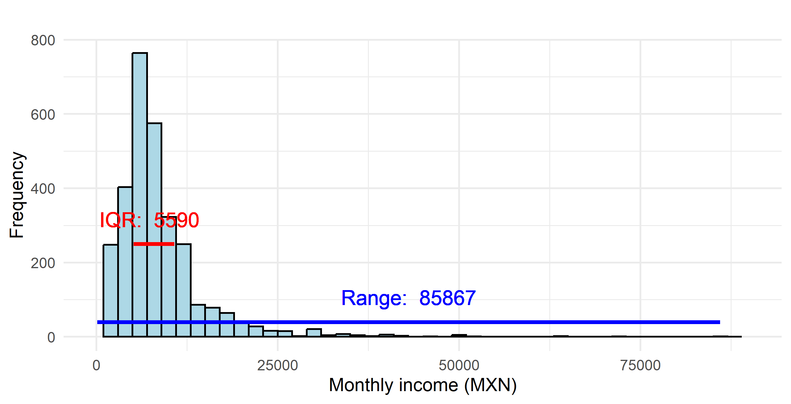
One typo, four statistics
A payroll clerk enters a worker’s monthly income with one extra zero: 100 000 pesos instead of 10 000.
Which of these does that single keystroke move — the mean, the median, the range, the IQR?
Range: sensitive to outliers
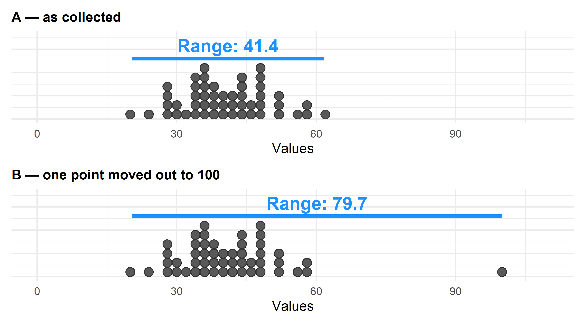
- Same 50 observations in both panels — B just moves one point out to 100.
- The range is very sensitive to outliers: it is built from the two extremes.
IQR: robust to outliers
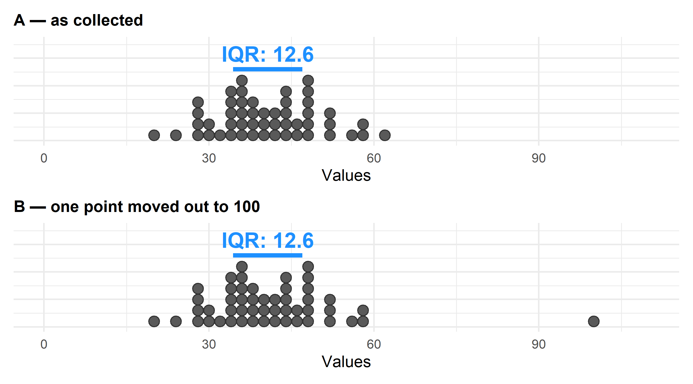
- Same two panels, now with the IQR drawn instead of the range.
- The IQR is robust: it hardly notices the moved point — same number, twice.
Part 6 — Spread that uses every observation
The range and the IQR both threw away most of the data. Here we meet the spread measures that use every observation, and ask how they react when the data is rescaled.
Variance
The range and the IQR each used two numbers. Now we want a measure that uses every observation: how far is a typical observation from the mean?
\[\cssId{mt-sigma2}{\sigma^2}=\cssId{mt-avgN}{\frac{1}{N}} \cssId{mt-sumpop}{\sum^N_{i=1}}\cssId{mt-dev2}{(x_i-\mu)^2}\]
- sigma2: The population variance — the average squared distance between an observation and the population mean.
- avgN: Divide by the population size to turn a total squared distance into an average one.
- sumpop: Add one term for every single member of the population, from the first to the N-th.
- dev2: One observation’s distance from the mean, squared.
Written in probability language, the same thing is \(\cssId{mt-expdev}{E[(X-\mu)^2]}\) — and for a discrete variable, \(\sigma^2=\sum_k P(X=k)(k-\mu)^2\).
- expdev: The same thing said in probability language: take the distance from the mean, square it, and ask what it is on average.
But why squared? Why not simply add up the distances \((x_i - \mu)\) and average them?
Hold that thought — try it on paper for two or three numbers and see what you get.
Sample equivalents
- Sample variance: \[\cssId{mt-s2}{s^2}=\cssId{mt-nm1}{\frac{1}{n-1}} \cssId{mt-sumdev}{\sum^n_{i=1}}\cssId{mt-devx2}{(x_i-\bar{x})^2}=\frac{1}{n-1}( \sum^n_{i=1}x_i^2-n\cssId{mt-xbarctr}{\bar{x}}^2)\]
- Sample standard deviation:
\[\cssId{mt-s}{s}=\cssId{mt-sqrt}{\sqrt{\frac{1}{n-1}( \sum^n_{i=1}x_i-\bar{x})^2}}=\sqrt{\frac{1}{n-1}( \sum^n_{i=1}x_i^2-n\bar{x}^2)}\]
- Why we divide by \(n-1\) rather than \(n\)?
- s2: The sample variance — your estimate of the population variance, built only from the observations you actually have.
- nm1: Divide by n-1, not n. Using the sample mean instead of the true mean uses up one piece of information, so this correction stops the variance coming out too small.
- sumdev: Add one term for each of the n observations in your sample.
- devx2: How far one observation sits from the sample mean, squared. The square removes the sign and makes distant points count much more than close ones.
- xbarctr: The sample mean — computed from your data, and the point every distance here is measured from.
- s: The sample standard deviation — the sample variance back in the original units. This is the spread number you report next to a mean.
- sqrt: The square root undoes the squaring. Variance is in squared units (kg squared); its root is back in kg.
Why n−1: small samples
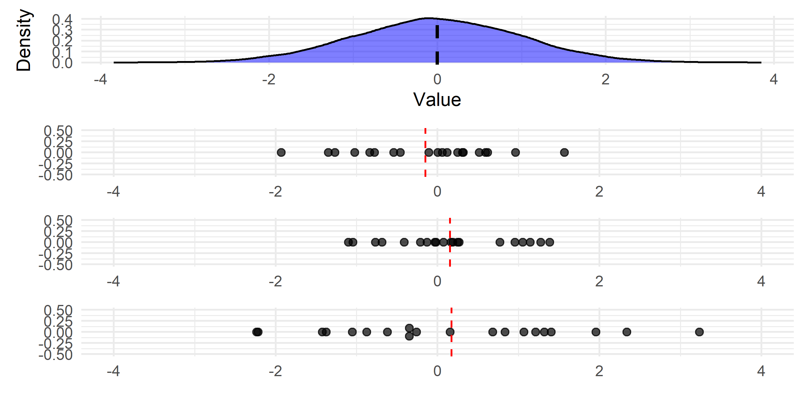
- Top panel: the population, with the population mean (black). Below: three small samples of 20, each with its own sample mean (red).
- Intuition — observed values usually fall closer to their own sample mean than to the population mean. The distances we measure are artificially small.
Sample equivalents (cont.)
- So the deviations from the sample mean underestimate the population standard deviation
- So we divide by a smaller number to correct for it
- In big sample \(\frac{1}{n}\) and \(\frac{1}{n-1}\) are similar, so correction doesn’t matter as much
Why n−1: big samples
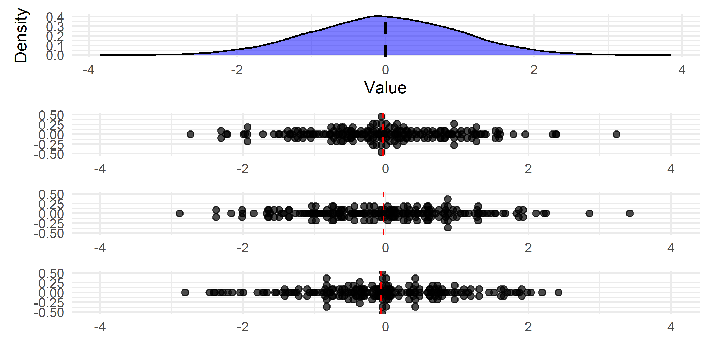
- The same picture with samples of 200 instead of 20.
- Intuition — in big samples our estimate of the population mean is already good, so there is little left to correct.
A manager asks: “spread of what, exactly?”
You hand your manager the variance of Health_data$weight. She asks: “and that’s in kilograms, right?”
Is it? And what would happen to that number if the hospital recorded weights in grams instead?
Standard Deviation
Consider a random variable X with \(E(X)=\mu_x\) and standard deviation \(\sigma_x\).
Ex: X is the number of followers a video gets, stored in views, distributed like this:
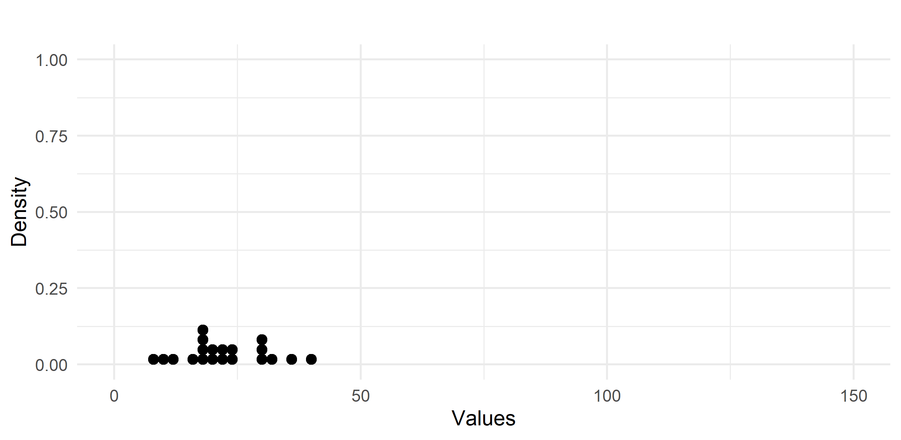
Same center — but rank them by spread
All three have a mean of ~0 (dashed line). Rank them from least to most spread out.
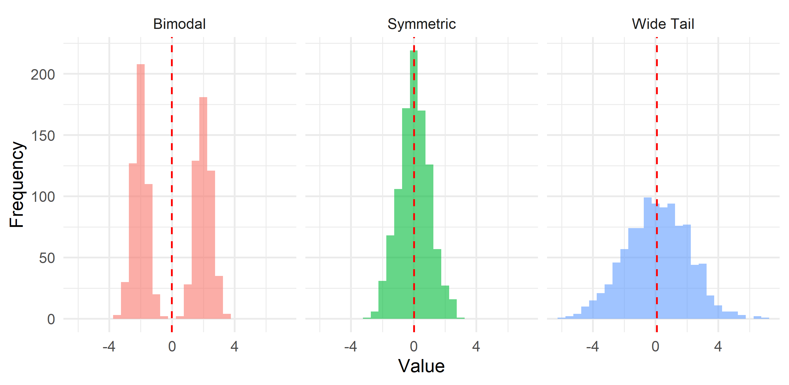
🖊️ Exercise 15 — Rank them, then compute
The three samples from the previous slide are rebuilt for you as the vectors symmetric, wide_tail and bimodal. Commit to a ranking first, then compute the variance and the standard deviation of each and see whether your eye was right.
var() gives the variance and sd() the standard deviation. Run them one vector at a time — var(symmetric), then sd(symmetric), then the same two calls on wide_tail and on bimodal.
set.seed(123)
symmetric <- rnorm(1000, mean = 0, sd = 1)
wide_tail <- rnorm(1000, mean = 0, sd = 2)
bimodal <- c(rnorm(500, mean = -2, sd = 0.5), rnorm(500, mean = 2, sd = 0.5))
mean(symmetric)
var(symmetric)
sd(symmetric)
mean(wide_tail)
var(wide_tail)
sd(wide_tail)
mean(bimodal)
var(bimodal)
sd(bimodal)All three means are ~0, so the mean says nothing here. The surprise is the ranking of the last two: the bimodal sample has the largest SD (2.08 against 2.02) even though it has no long tail — it has almost no observations near the mean at all. Spread is distance from the centre, whatever the shape.
Variance: same center, different spread
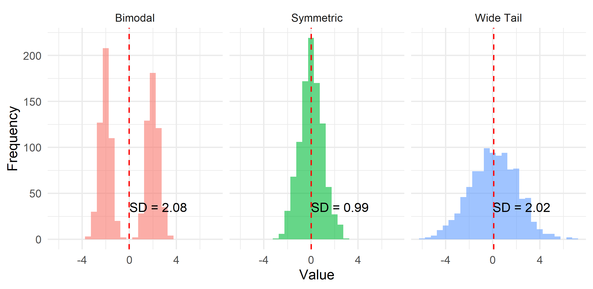
- Same centre in all three panels, three different standard deviations.
- The bimodal panel wins on spread without having a single extreme value — the SD measures distance from the centre, not the length of a tail.
🖊️ Exercise 16 — Shift it, stretch it
The 20 follower counts in the picture are loaded as the vector views. Two questions — write your prediction first, then compute.
- Everyone gains 40 followers: \(Y = X + 40\). What happens to the mean of
views? To the SD? - Everyone’s followers triple: \(Y = 3X\). What happens to the mean? To the SD? To the variance?
Make the new vector first — y <- x + 40 — then run mean(y) and sd(y) on it.
Standard Deviation: add a constant
What happens to the mean and the standard deviation of views if everyone gets 40 more followers — \(Y=X+40\)?
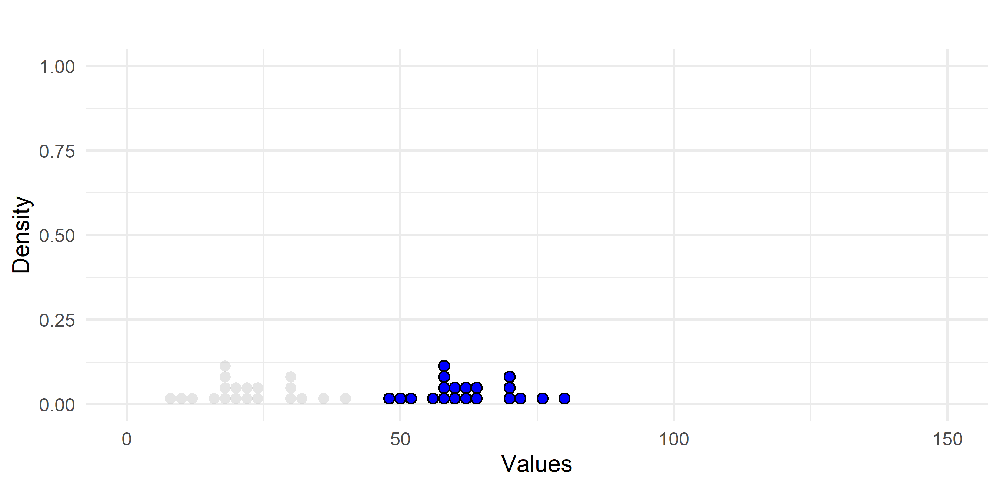
- Grey = the original counts, blue = after the shift.
- The whole cloud slides 40 to the right: the mean moves by 40, the distances between the points are untouched, so the SD does not move.
Standard Deviation: multiply by a constant
What happens to the mean and the standard deviation of views if everyone’s followers get multiplied by 3 (without addition) — \(Y=3X\)?
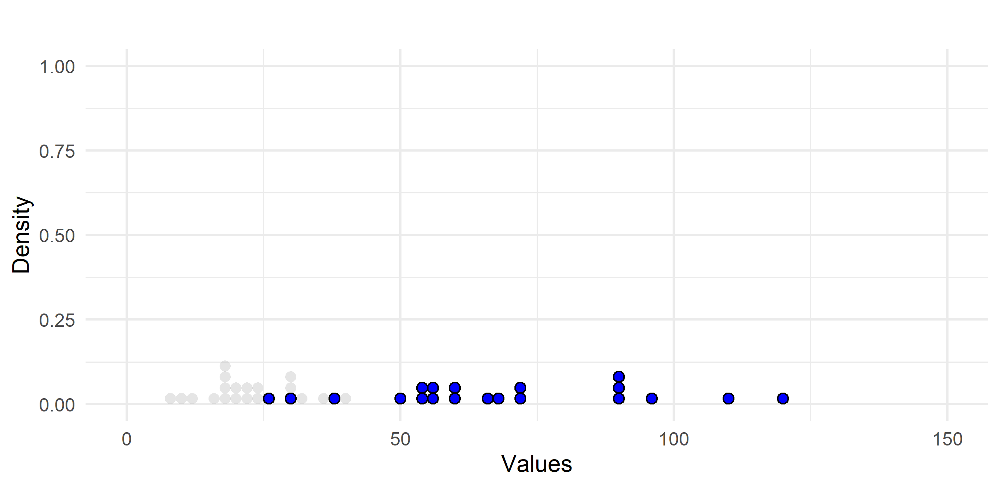
- Grey = the original counts, blue = after the stretch.
- The cloud is stretched, not shifted: every gap between two points is three times wider, so the SD is multiplied by 3 — and the variance by 9.
What a linear change does
- \(Y = X + a\): the mean shifts by \(a\), the SD does not move at all — every observation and the mean move together, so no distance changes.
- \(Y = bX\): the mean is multiplied by \(b\), the SD by \(|b|\), and the variance by \(b^2\).
\[\cssId{mt-eshift}{E(X+c)=E(X)+c} \qquad \cssId{mt-varshift}{Var(X+c)=Var(X)}\] \[\cssId{mt-escale}{E(cX)=cE(X)} \qquad \cssId{mt-varscale}{Var(cX)=c^2Var(X)}\]
- eshift: Add the same constant c to every observation and the mean moves by exactly c.
- varshift: The spread does not move at all: every observation and the mean shift together, so no distance between them changes.
- escale: Multiply every observation by c and the mean is multiplied by c as well.
- varscale: The variance is multiplied by c squared, because every deviation is multiplied by c and the variance squares deviations. The standard deviation is multiplied by the size of c.
The algebra behind these four lines is in the appendix.
Coefficient of Variation
Coefficient of Variation divides the standard deviation by the mean.
\[\cssId{mt-cv}{C.V.}=\frac{\cssId{mt-sigma}{\sigma}}{\cssId{mt-absmu}{|\mu|}}\]
And sample equivalent \[\cssId{mt-cvs}{c.v.}=\frac{\cssId{mt-s}{s}}{\cssId{mt-absxbar}{|\bar{x}|}}\]
- cv: The coefficient of variation — spread measured in units of the mean. Both units cancel in the ratio, so it is a pure number you can compare across variables.
- sigma: The population standard deviation — the variance brought back to the original units, so it can be written next to a mean.
- absmu: The size of the mean, ignoring its sign. Dividing by it turns “how far do values spread” into “how far relative to a typical value”.
- cvs: The sample version of the same ratio, computed from the data you have.
- s: The sample standard deviation — the sample variance back in the original units. This is the spread number you report next to a mean.
- absxbar: The size of the sample mean, ignoring its sign — the yardstick the spread is measured against.
- Why?
- It expresses standard deviation as proportion of the mean
- Small value means variation is low compared to the mean
- It is unit free
- You can compare it across variables with different units/magnitudes
- It expresses standard deviation as proportion of the mean
Coefficient of Variation: example
Example — two stocks, priced in different currencies. Which one is riskier?
| Date | MXN stock | USD stock |
|---|---|---|
| 2023-07-01 | 91.59 | 1.01 |
| 2023-07-02 | 96.55 | 1.16 |
| 2023-07-03 | 123.38 | 1.02 |
| 2023-07-04 | 101.06 | 1.07 |
| 2023-07-05 | 101.94 | 1.09 |
| 2023-07-06 | 125.73 | 0.90 |
| 2023-07-07 | 106.91 | 1.35 |
| 2023-07-08 | 81.02 | 1.23 |
- One trades around 100 pesos, the other around 1.2 dollars.
- Their standard deviations are not comparable — different units, different magnitudes.
- So which stock moves around more?
🖊️ Exercise 17 — Make two incomparable things comparable
The two price series are rebuilt for you as the vectors mxn and usd. Compute the SD of each, then the coefficient of variation of each, and say which stock is more variable — and why the two statistics disagree about the answer.
There is no cv() in base R — write the ratio out yourself: sd(mxn) / abs(mean(mxn)).
The SDs say the peso stock is 98 times more variable (14.59 against 0.149) — that is just the exchange rate talking. Divide each by its own mean and the two carry nearly the same risk: 0.14 against 0.12.
Coefficient of Variation: the answer
- Standard deviation:
- USD: 0.149
- MXN: 14.59
- Coefficient of variation:
- USD: 0.12
- MXN: 0.14
The SD ratio is an artefact of the currency. The CV is unit-free, so it is the one you can compare.
Coefficient of Variation: transformations
So more generally, if \(y_i=bx_i\), then
\[\cssId{mt-cvy}{C.V._y}=\frac{\sigma_y}{|\mu_y|}=\frac{\cssId{mt-bsigma}{|b|\sigma_x}}{\cssId{mt-bmu}{|b\mu_x|}}=\cssId{mt-cvx}{C.V._x}\] What if \(y_i=bx_i+a\)?
Then
\[\cssId{mt-cvy2}{C.V._y}=\frac{\sigma_y}{|\mu_y|}=\frac{|b|\sigma_x}{\cssId{mt-bmua}{|b\mu_x+a|}} \cssId{mt-neq}{\neq} C.V._x\]
- cvy: The coefficient of variation of the rescaled variable y.
- bsigma: Multiplying every value by b multiplies the standard deviation by the size of b.
- bmu: It multiplies the mean by b as well — so the same factor appears above and below and cancels.
- cvx: Which is why a pure change of units (pesos to dollars) leaves the coefficient of variation untouched.
- cvy2: The coefficient of variation after a stretch and a shift together.
- bmua: Adding a constant moves the mean but not the standard deviation, so the a survives only in the denominator and nothing cancels any more.
- neq: So the coefficient of variation is not preserved once you add a constant — only pure multiplication leaves it alone.
Part 7 — The boxplot
Five numbers, one picture — and a rule that decides which points get called outliers.
Box and Whiskers plot
- Helps to see the distribution of the data and the outliers
- Outliers reveal anomalies and potential data-collection errors
- A whisker extends at most 1.5 × IQR from the box
- Any point beyond that is flagged as an outlier
- If no point is beyond 1.5 × IQR, the whisker stops at the last datapoint
🖊️ Exercise 18 — Build one, then read the outliers off it
Draw a boxplot of Health_data$weight and print its quartiles. Then answer with numbers, not by eye: above which weight does R start drawing dots, and how many of the 37,858 people are out there?
boxplot() draws it and quantile(Health_data$weight, c(0.25, 0.5, 0.75)) gives the quartiles. A count is a table() of a TRUE/FALSE condition: table(Health_data$weight > cut_off).
The rule puts the cut-off at \(q_3 + 1.5 \times IQR \approx 109.8\) kg, and 816 people weigh more than that — they are the dots above the upper whisker. “Outlier” here is a rule, not a verdict: in a sample of 37,858 you should expect plenty of them, and none of these weights is impossible.
Box and Whiskers plot: anatomy
The box spans Q1–Q3 (the middle 50%); the line inside is the median.
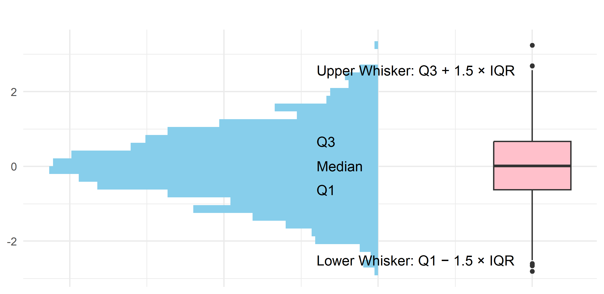
Box and Whiskers plot (cont.)
Dataset comparisons — they summarize data very well (age by diabetes status):
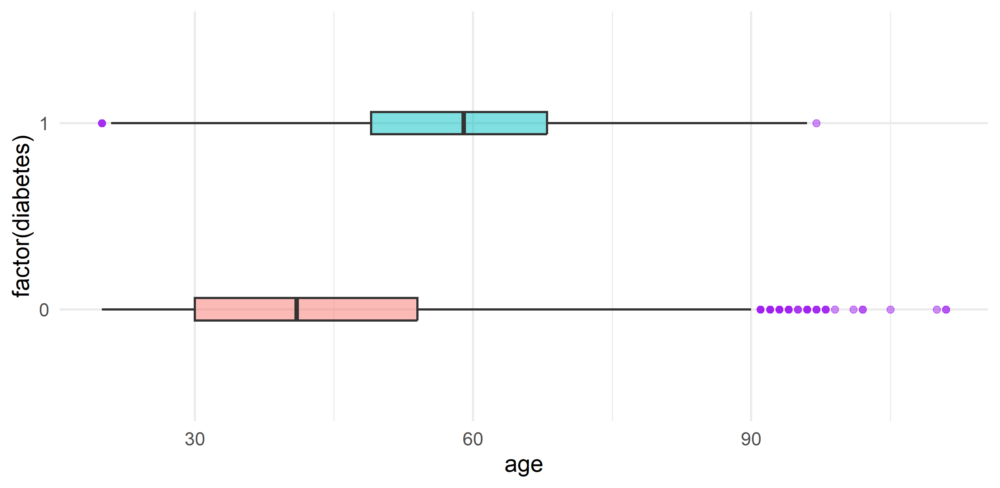
- Two groups, one picture: the median line answers “which group is higher”, the width of the box answers “which group is more spread out”.
Box and Whiskers plot (cont. 2)
Dataset comparisons — boxplot with the full distribution overlaid (age by diabetes status):
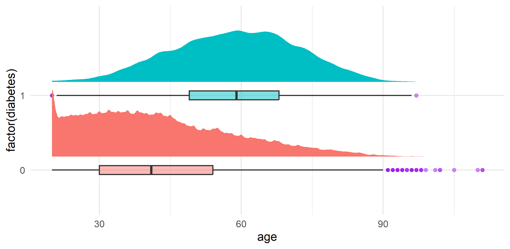
- The five numbers of the boxplot are a summary — the curve behind them shows what the summary threw away.
Reading a boxplot (warm-up)
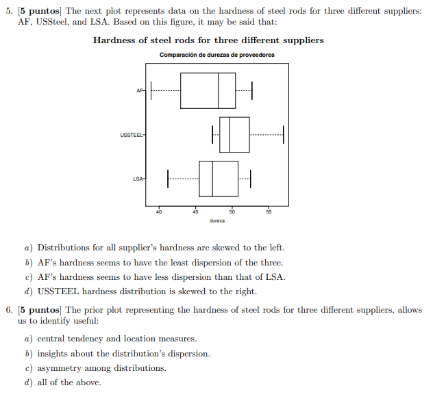
Exam spotlight — Fall 2025 Midterm 1
Real questions from last year’s Midterm 1. We solve these together in class.
Exam question — Q1 & Q2
The Households & Environment Survey — the real Midterm 1 dataset — is loaded as households: 2,000 Mexican households surveyed once, in 2017.
Q1 (Dataset type). Is households cross-sectional, time-series, or panel?
Q2 (Variable classification). Classify each of households$household_size, households$electricity_bill_monthly, households$separates_trash and households$locality_size.
households[1:10, ] prints the first ten rows, column names along the top. table(households$household_size), table(households$separates_trash) and table(households$locality_size) show each column’s distinct values — and, for an ordered variable, print them in their natural order. For households$electricity_bill_monthly, which has hundreds of values, use min(), max() and quantile(); that column contains missing values, so add na.rm = TRUE.
households[1:10, ]
table(households$household_size) # 1, 2, 3, ... -> whole counts
table(households$separates_trash) # two labels
table(households$locality_size) # four labels, printed largest to smallest
min(households$electricity_bill_monthly, na.rm = TRUE)
max(households$electricity_bill_monthly, na.rm = TRUE)
quantile(households$electricity_bill_monthly, c(0.25, 0.50, 0.75), na.rm = TRUE)Q1 — cross-sectional: every row of households is a different household, all surveyed in 2017. No unit is followed over time.
Q2: households$household_size discrete (a count) · households$electricity_bill_monthly continuous (a measurement) · households$separates_trash categorical, binary · households$locality_size categorical, ordinal — its categories run smallest to largest.
Exam question — Q3
households is loaded — 2,000 Mexican households from the 2017 Midterm 1 survey.
An energy company wants to understand the distribution of weekly household gasoline spending to design a fuel-discount program.
Visualize households$gasoline_spending_weekly and describe its shape.
households$gasoline_spending_weekly is numerical, so hist(), not barplot(). Try breaks = 40 to see the shape properly.
hist(households$gasoline_spending_weekly, breaks = 40,
main = "Weekly gasoline spending", xlab = "MXN per week")
mean(households$gasoline_spending_weekly)
median(households$gasoline_spending_weekly)
quantile(households$gasoline_spending_weekly, c(0.25, 0.50, 0.75, 0.90))
max(households$gasoline_spending_weekly)
mean(households$gasoline_spending_weekly == 0) # households with no carhouseholds$gasoline_spending_weekly is right-skewed, with a large spike at zero — many households spend nothing (no vehicle), and a long right tail of heavy spenders. For the discount program that matters: the mean of that column describes almost nobody.
Exam question — Q5
households is loaded — 2,000 Mexican households from the 2017 Midterm 1 survey.
Compare households$electricity_bill_monthly between households where households$uses_electricity_cooling is TRUE and those where it is FALSE. Which group has the higher median bill?
households$electricity_bill_monthly[households$uses_electricity_cooling == TRUE] keeps only the bills of one group — wrap that in median() and repeat with == FALSE. households$uses_electricity_cooling is TRUE/FALSE, and households$electricity_bill_monthly contains missing values, so pass na.rm = TRUE. boxplot(electricity_bill_monthly ~ uses_electricity_cooling, data = households) draws both distributions side by side.
b <- households$electricity_bill_monthly
g <- households$uses_electricity_cooling
median(b[g == TRUE], na.rm = TRUE)
median(b[g == FALSE], na.rm = TRUE)
boxplot(electricity_bill_monthly ~ uses_electricity_cooling, data = households,
xlab = "Uses electricity for cooling", ylab = "Monthly bill (MXN)")Households with households$uses_electricity_cooling == TRUE have the higher median households$electricity_bill_monthly. On a boxplot the median is the line inside the box — that line, not the whiskers, is what the question asks about.
🖊️ Exercise 19 — The whole week, one question
workforce is loaded — 3,000 Mexican workers, with workforce$monthly_income and workforce$gender ("Women" / "Men").
You are the compensation analyst. Your manager asks:
“Do women in this sample earn less than men — and by how much?”
Answer it with the tools of this week: compare workforce$monthly_income across the two values of workforce$gender. Decide what to compute, compute it, and build one picture that supports your answer.
workforce$monthly_income[workforce$gender == "Women"] is workforce$monthly_income restricted to one group — wrap it in median(), then do the same with workforce$gender == "Men". barplot(c(Women = ..., Men = ...)) draws two labelled bars from those two numbers. workforce$monthly_income is right-skewed — that should decide which measure you report.
# Median, not mean: workforce$monthly_income is right-skewed, so a few very
# high earners would drag the mean and misrepresent the typical worker.
w <- workforce$monthly_income[workforce$gender == "Women"]
m <- workforce$monthly_income[workforce$gender == "Men"]
median(w); median(m)
mean(w); mean(m)
barplot(c(Women = median(w), Men = median(m)),
col = c("#7B68A6", "#43418A"),
main = "Median monthly income by gender", ylab = "MXN")
# Gap in pesos, and as a share of the male median:
median(m) - median(w)
round(1 - median(w) / median(m), 3)Notice the mean gap and the median gap in workforce$monthly_income are not the same size — reporting the wrong one changes the story. Also worth saying out loud: this is a raw gap, not a like-for-like comparison (workforce$hours_worked, workforce$region and workforce$age differ between the two groups too). Controlling for those is regression — the regression weeks.
What you must be able to do this week
Data types & visualization
- Identify the unit of observation and whether data is cross-sectional, time-series, or panel.
- Classify a variable as categorical (nominal/ordinal) or numerical (discrete/continuous).
- Build and read the right chart for a categorical variable — a bar chart off a frequency table, where length = count and categories are easy to compare.
Central tendency
- Choose and compute the mean, median, and mode, and know which measure an outlier moves.
- Compute the mean of a binary variable (a proportion).
- Find and interpret percentiles, quartiles, and deciles.
First measures of spread
- Compute the range (\(x_{max}-x_{min}\)) and the IQR (\(q_3-q_1\)) of a variable, and of separate groups within it.
- Explain why the range is destroyed by a single outlier and the IQR is not, and choose between them for a given question.
Spread that uses every observation
- Compute and interpret the variance and the standard deviation, and say why the sample version divides by \(n-1\).
- Know what a linear change \(y = bx + a\) does to the mean, the SD and the variance.
- Compute the coefficient of variation and use it to compare spread across variables measured in different units.
- Choose the right spread measure for the question — robust (IQR) vs sensitive to outliers (variance, standard deviation).
The boxplot
- Build a boxplot and read its five-number summary — median, quartiles, whiskers — and say which points the \(q_3 + 1.5 \times IQR\) rule flags as outliers.
Next week: the shape of the whole distribution — histograms, modality and skewness.
Appendix — optional (extra & theory)
Variance & Standard Deviation — why square then root?
- Why do we first take squares and then take square root?
- Can’t we just do \(\frac{1}{N}\sum^N_{i=1}(x_i-\mu)\)?
- NO! Because \(\sum^N_{i=1}(x_i-\mu)=0\)
Variance & Standard Deviation (cont.) — why not MAD?
- Why don’t we just do Mean Absolute Deviation?
- \(MAD=\frac{1}{N}\sum^N_{i=1}|(x_i-\mu)|\)
- MAD is not differentiable at 0 :(
- Variance puts more weight on far away observations.
- It’s a weighted average distance, where weights are distances themselves.
\[\cssId{mt-sigma2mad}{\sigma^2}=\sum^N_{i=1}(x_i-\mu)^2=\frac{1}{N}\sum^N_{i=1} \cssId{mt-weight}{\underbrace{|(x_i-\mu)|}_{Weight}}*\cssId{mt-distance}{\underbrace{|(x_i-\mu)|}_{Distance}}\]
- It makes it very sensitive to outliers, which get a lot of weight!
- Standard deviation retains this property
- sigma2mad: The population variance again — but written as a weighted average of distances rather than as a sum of squares.
- weight: Read the squared deviation as a product of two identical factors. This one acts as the weight the observation gets: the further out it is, the more it counts.
- distance: And this one is the distance itself. Weighting each distance by that same distance is exactly why one far-away point can dominate the variance.
Standard Deviation (cont.) — \(Y=X+40\)
\[\scriptsize \cssId{mt-muY}{\mu_Y}=E(Y)=\frac{\sum_{i=1}^N(y_i+40)}{N}=\frac{\sum_{i=1}^N(x_i+40)}{N}=\cssId{mt-split40}{\frac{\sum_{i=1}^Nx_i+N*40}{N}}=E(X)+40=\cssId{mt-muX40}{\mu_X+40}\]
\[\scriptsize \cssId{mt-sigmaY}{\sigma_Y}=\sqrt{Var(Y)}=\sqrt{\frac{\sum_i(y_i-\mu_y)^2}{N}}=\cssId{mt-cancel40}{\sqrt{\frac{\sum_i((x_i+40)-(\mu_x+40))^2}{N}}}=\sqrt{\frac{\sum_i(x_i-\mu_x)^2}{N}}=\sqrt{Var(X)}=\cssId{mt-sigmaX}{\sigma_X}\]
- muY: The mean of the shifted variable — the thing we are solving for.
- split40: The 40 arrives once for every person, so it adds up to N times 40; divided by N that is exactly 40 again.
- muX40: The result: giving everyone 40 more followers adds 40 to the mean, and nothing else happens.
- sigmaY: The standard deviation of the shifted variable.
- cancel40: Both the observation and the mean grew by 40, so the +40 cancels inside every single deviation.
- sigmaX: Nothing at all is left of the shift — the spread is exactly what it was before.
Standard Deviation (cont.) — \(Y=3X\)
\[\scriptsize \cssId{mt-muy3}{\mu_Y}=E(Y)=\frac{\sum_iy_i}{N}=\frac{\sum_i3x_i}{N}=\cssId{mt-pull3}{3\frac{\sum_ix_i}{N}}=3E(X)=\cssId{mt-mux3}{3\mu_X}\]
\[\scriptsize \cssId{mt-sigmay3}{\sigma_Y}=\sqrt{Var(Y)}=\sqrt{\frac{\sum_i(y_i-\mu_y)^2}{N}}=\sqrt{\frac{\sum_i(3x_i-3\mu_x)^2}{N}}=\cssId{mt-sq3}{\sqrt{3^2\frac{\sum_i(x_i-\mu_x)^2}{N}}}=\sqrt{3^2Var(X)}=\cssId{mt-sigmax3}{3\sigma_X}\]
- muy3: The mean of the tripled variable — the thing we are solving for.
- pull3: Every term in the sum carries the same factor 3, so it can be pulled out in front.
- mux3: The result: tripling everyone’s followers triples the mean.
- sigmay3: The standard deviation of the tripled variable.
- sq3: Each deviation is three times bigger, and the variance squares deviations — so the whole variance carries a factor of 3 squared.
- sigmax3: Taking the root turns 3 squared back into 3: the standard deviation triples while the variance becomes nine times larger.
Exam practice
These are the Week 2 exercise-set problems, on real data: an excerpt of the household survey used in last year’s Midterm 1, real daily transit ridership, ten years of Mexican labour-survey averages, a US labour-force survey, an inflation panel and 684 eBay auctions. Run the commands, look at what comes back, then decide.
📝 Exam practice 1 — Data structures
Three real data frames are loaded: households (2,000 households, 2017 survey), ridership (daily city bus ridership) and wages_panel (Mexican labour-survey averages by region and year). Each is a different structure. Classify them — cross-sectional, time-series, or panel. [D1]
Don’t guess from the names. The answer is always the same two counts: how many units and how many time points per unit — so look for the unit column and the time column in each (wages_panel$region and wages_panel$year, ridership$date).
households[1:5, ], ridership[1:5, ] and wages_panel[1:5, ] print the first rows and their column names. table(wages_panel$year) and table(wages_panel$region) list the distinct values of a column and how many rows fall on each — more than one row per time period is the signature of a panel. For ridership, min(ridership$date) and max(ridership$date) show the span.
households[1:5, ] # 2,000 households, all surveyed once in 2017
ridership[1:5, ] # one bus system, 120 consecutive days
wages_panel[1:5, ] # 2 regions x 10 years
table(wages_panel$year) # 10 years, 2 rows in each -> 2 units per period
table(wages_panel$region) # 2 regions, 10 rows each -> 10 years per unit
min(ridership$date); max(ridership$date) # 120 rows, one per day, no unit columnhouseholds → cross-sectional · ridership → time-series · wages_panel → panel.
The exam’s other scenarios classify the same way: 300 students surveyed once → cross-sectional; 80 ITAM graduates followed for five years → panel.
📝 Exam practice 2 — Variable types
households is an excerpt of the actual Midterm 1 dataset — 2,000 Mexican households, surveyed once in 2017. Classify its columns as categorical, discrete, or continuous — and get the evidence out of R before you answer. [D2]
Start with households$household_size, households$electricity_bill_monthly, households$separates_trash and households$locality_size — the four the exam asked about.
table(households$household_size), table(households$separates_trash) and table(households$locality_size) each print one cell per distinct value, so a short table means a categorical variable or a count. households$electricity_bill_monthly would print hundreds of cells — describe that one with min(), max() and quantile() instead (with na.rm = TRUE, that column has missing values).
table(households$household_size) # 1, 2, 3, ... -> DISCRETE (a count)
table(households$separates_trash) # TRUE/FALSE -> CATEGORICAL (binary)
table(households$locality_size) # four size labels -> ORDINAL
min(households$electricity_bill_monthly, na.rm = TRUE)
max(households$electricity_bill_monthly, na.rm = TRUE)
quantile(households$electricity_bill_monthly, c(0.25, 0.50, 0.75), na.rm = TRUE)
# no repeated values, an amount measured to the peso -> CONTINUOUShouseholds$locality_size is the interesting one: it is categorical, but its categories have a natural order, which households$num_vehicles (discrete count) and households$separates_trash (nominal) do not.
The rule behind the evidence: label → categorical, count → discrete, measurement → continuous.
📝 Exam practice 3 — Variable types II
Same three-way choice, from the description alone. [D3]
(a) Daily number of Uber trips completed by one driver in Mexico City.
→ Discrete — a count of trips.
(b) Whether an employee received job training during the past year.
→ Categorical — a yes/no label.
(c) Time (in minutes) to serve a customer in a bank branch.
→ Continuous — a measurement; any positive value.
(d) Number of times an individual has changed jobs in their career.
→ Discrete — a count.
📝 Exam practice 4 — Does the sampling strategy lie?
Monterrey wants the share of restaurants with health-inspection violations. Inspecting all of them is too costly, so they must sample. For each strategy, is there sample selection bias? [D4]
(a) Every restaurant in one neighborhood. (b) A random 20% of the city. (c) All restaurants whose street number ends in 7. (d) The 40 largest by seating.
→ (a) bias — one neighborhood is not the city. (b) no bias — random sampling, the best strategy. (c) no bias — the last digit is unrelated to violations, so it is effectively random. (d) bias — the largest restaurants differ from the rest.
📝 Exam practice 4 (cont.) — See it on real data
Same four strategies, but now you can check them against the truth: households (all 2,000 rows of the 2017 survey) is your whole “city”, so you know the real answer.
Estimate the mean of households$electricity_bill_monthly under each strategy and compare it to the mean over all 2,000 rows. The strategies subset on households$locality_size, households$household_id and households$household_size. For (b), the stand-in for a random draw is every fifth households$household_id — the id number has nothing to do with households$electricity_bill_monthly, so selecting on it is as good as random.
Subset, then average — households$electricity_bill_monthly has missing values, so keep na.rm = TRUE throughout, e.g. mean(households$electricity_bill_monthly[households$locality_size == "Large_city"], na.rm = TRUE). For (b) use households$household_id %% 5 == 0, for (c) households$household_id %% 10 == 7, for (d) households$household_size >= 7.
b <- households$electricity_bill_monthly
truth <- mean(b, na.rm = TRUE)
a <- mean(b[households$locality_size == "Large_city"], na.rm = TRUE)
r <- mean(b[households$household_id %% 5 == 0], na.rm = TRUE)
c7 <- mean(b[households$household_id %% 10 == 7], na.rm = TRUE)
d <- mean(b[households$household_size >= 7], na.rm = TRUE)
round(c(truth = truth, a_large_city = a, b_every_5th = r,
c_digit_7 = c7, d_biggest = d), 1)
# now change the digit in (c) and watch the estimate wander:
round(c(digit_2 = mean(b[households$household_id %% 10 == 2], na.rm = TRUE),
digit_3 = mean(b[households$household_id %% 10 == 3], na.rm = TRUE),
digit_9 = mean(b[households$household_id %% 10 == 9], na.rm = TRUE)), 1)Change the digit of households$household_id and the estimate moves — sometimes above the truth, sometimes below. That is noise: small samples wobble, but they wobble around the right answer. The samples selected on households$locality_size and households$household_size land above the truth every time, because big cities and big households really do pay more. Being wrong in the same direction no matter how you re-run it is what makes a strategy biased rather than merely noisy.
📝 Exam practice 5 — Selection bias in the wild
Is there a selection-bias concern, and why? [D5]
(a) A pharma company recruits trial participants through newspaper ads and online forums.
→ Bias. People who answer ads differ systematically from the target population.
(b) A university surveys only students who visit the career center.
→ Bias. Career-center visitors are more job-focused than the average student.
(c) A supermarket chain samples receipts at random across all its stores.
→ No bias for its own customers — but it says nothing about people who never shop there.
(d) A restaurant judges its food by its online reviews.
→ Bias. Reviews are self-selected: very happy and very angry customers write them.
(e) A consulting firm surveys firms about profits; a third refuse to answer.
→ Bias (non-response). Firms that answer are likely the more successful ones.
📝 Exam practice 6 — Exploring the cps dataset
The cps dataset (loaded for you) is a labor force survey with individuals’ demographic characteristics, employment status, wages, and education. Variables of interest: [D6]
lfstatus: labor force status (employed, unemployed, not in labor force)marstatus: marital status (married, single, divorced, widowed)race: race category (e.g., White, Black, Other)wagehr: hourly wage (in dollars, only observed for individuals paid by the hour)ownchild: number of own children in the household
(a) Provide a frequency table of cps$lfstatus. (b) Draw a bar chart of the proportions of cps$lfstatus. Interpret the results.
table(cps$lfstatus) for (a); barplot(prop.table(table(cps$lfstatus))) for (b).
📝 Exam practice 6 — cps dataset (cont.)
(c) Create a relative conditional frequency table of cps$marstatus and cps$race. (d) What is the difference in the probability of being married between Black and White individuals? [D6]
prop.table(table(cps$marstatus, cps$race), margin = 2) — margin = 2 conditions on the column variable, cps$race.
Each column sums to 1: it is the distribution of marital status given race.
\[\cssId{mt-pmw}{P(\text{Married} \mid \text{White})} - \cssId{mt-pmb}{P(\text{Married} \mid \text{Black})} = 0.6245 - 0.3550 = \cssId{mt-pgap}{0.2695}\]
White individuals are about 27 percentage points more likely to be married than Black individuals.
- pmw: Among White individuals only, the share who are married — one column of the conditional table.
- pmb: The same share computed inside the Black group. Conditioning means each group is measured against its own total, not against the whole sample.
- pgap: The difference between two shares, so it is measured in percentage points: about 27 more married people per 100.
📝 Exam practice 6 — cps dataset (cont. 2)
(e) Calculate the difference in the average hourly wage (cps$wagehr) between married and not-married individuals. (f) Restrict to individuals aged 30–59 (cps$age): what are the mean and standard deviation of cps$ownchild? [D6]
Subset with logical conditions, e.g. cps$wagehr[cps$marstatus == "Married"], and remember na.rm = TRUE.
# (e) one group at a time
mean(cps$wagehr[cps$marstatus == "Married"], na.rm = TRUE)
mean(cps$wagehr[cps$marstatus != "Married"], na.rm = TRUE)
mean(cps$wagehr[cps$marstatus == "Married"], na.rm = TRUE) -
mean(cps$wagehr[cps$marstatus != "Married"], na.rm = TRUE)
# (f) keep only the rows aged 30 to 59
mid_age <- cps[cps$age >= 30 & cps$age <= 59, ]
mean(mid_age$ownchild, na.rm = TRUE)
sd(mid_age$ownchild, na.rm = TRUE)(e) Married: 19.55, not married: 17.30 — married individuals earn about $2.25 more per hour on average. This “marriage premium” may reflect selection effects, productivity differences, or employer discrimination.
(f) Mean ≈ 0.75, SD ≈ 1.12. The SD exceeding the mean suggests a right-skewed distribution with many zeros.
📝 Exam practice 6 — cps dataset (cont. 3)
(g) The variable cps$wagehr has the following summary statistics: [D6]
Min. 1st Qu. Median Mean 3rd Qu. Max. NA's
1.01 12.78 16.41 18.60 22.00 90.00 2174i. Is the distribution symmetric, left-skewed, or right-skewed? ii. If one more worker with wage = 16.41 is added, how would the sample mean and median change?
Get the evidence out of R before you answer — then check whether the table alone would have been enough to reach the same conclusion.
mean(cps$wagehr, na.rm = TRUE) and median(cps$wagehr, na.rm = TRUE) — both need na.rm = TRUE, because 2,174 people have no hourly wage recorded. Compare the two, and compare the distance from the minimum to the median with the distance from the median to the maximum.
The mean is 18.60 and the median is 16.41: the mean sits about two dollars to the right of the median, and the tail runs out to 90 — right-skewed. The extra worker is paid exactly the median, so the median stays put; 16.41 is below the mean of 18.60, so the mean is dragged down — by so little that the change only shows up in the fourth decimal.
i. Right-skewed. The mean (18.60) exceeds the median (16.41), and the distance from the median to the max (73.59) is much larger than from the min to the median (15.40). This is typical of wage distributions.
ii. The new wage equals the median, so the median stays the same or barely changes. The mean decreases slightly because 16.41 < 18.60 (the current mean), pulling the mean down.
📝 Exam practice 6 — cps dataset (cont. 4)
(g), continued. Now compute: iii. the sample interquartile range (IQR) of cps$wagehr; iv. the values of the lower and upper whiskers in the box plot of cps$wagehr. [D6]
quantile(cps$wagehr, 0.25, na.rm = TRUE) and the same at 0.75 give \(Q_1\) and \(Q_3\). A whisker stops at the most extreme wage still inside the fence, so max(cps$wagehr[cps$wagehr <= upper_fence], na.rm = TRUE) is the upper one.
q1 <- quantile(cps$wagehr, 0.25, na.rm = TRUE)
q3 <- quantile(cps$wagehr, 0.75, na.rm = TRUE)
q1
q3
iqr_wage <- q3 - q1
iqr_wage
lower_fence <- q1 - 1.5 * iqr_wage
upper_fence <- q3 + 1.5 * iqr_wage
lower_fence
upper_fence
min(cps$wagehr[cps$wagehr >= lower_fence], na.rm = TRUE)
max(cps$wagehr[cps$wagehr <= upper_fence], na.rm = TRUE)iii. \(\text{IQR} = Q_3 - Q_1 = 22.00 - 12.78 = 9.22\)
iv. The fences are \(Q_1 - 1.5 \times \text{IQR} = -1.06\) and \(Q_3 + 1.5 \times \text{IQR} = 22 + 1.5(9.22) = 35.83\). A whisker does not reach the fence — it stops at the most extreme wage still inside it: lower whisker = $1.01, upper whisker = $35.50.
📝 Exam practice 7 — Aguas frescas (by hand)
A small business sells aguas frescas at a weekend tianguis in Mexico City. Each cup is sold for 40 pesos. Over 16 Sundays, the number of cups sold per day has a sample mean of \(\bar{x} = 120\) and a sample standard deviation of \(s_x = 20\). [D8]
(a) What are the sample mean and standard deviation of revenues in pesos? (Revenue = price × quantity.)
(b) The stall rental fee is 2,000 pesos per Sunday, and it costs 5 pesos to produce each cup. What are the sample mean and standard deviation of profits? (Profit = Revenue − Fixed Cost − Variable Cost.)
Use R as a calculator — apply the linear-transformation rules for mean and SD:
If \(y = bx + a\), then \(\bar{y} = b\bar{x} + a\) and \(s_y = |b|\,s_x\) — the constant \(a\) shifts the mean but not the SD.
(a) \(\bar{R} = 40 \times 120 = 4{,}800\) pesos; \(s_R = |40| \times 20 = 800\) pesos.
(b) Profit \(= 35Q - 2000\), so \(\bar{\Pi} = 35 \times 120 - 2000 = 2{,}200\) pesos and \(s_\Pi = |35| \times 20 = 700\) pesos. The constant (\(-2000\)) shifts the mean but does not affect the standard deviation.
📝 Exam practice 8 — Inflation panel
Use the inflation dataset (loaded for you): annual inflation rates for 45 countries, 2010–2019. Variables: inflation$country (3-letter code), inflation$year, inflation$inflation (percentage points). Briefly interpret each result. [D9]
(a) How many observations are associated with deflation (negative inflation rates)?
(b) How many countries experienced deflation at least once during this period?
(c) Which countries have the lowest and highest average inflation over the 10-year period?
(d) Which countries have the lowest and highest standard deviation of inflation?
table(inflation$inflation < 0)— theTRUEcell is the count. (b)table()ofinflation$countryon the deflation rows only: every country with a non-zero cell had deflation at least once, so count the non-zero cells. (c)–(d)boxplot(inflation$inflation ~ inflation$country)puts all 45 countries side by side, so the extremes stand out; then confirm a country’s exact figure withmean(inflation$inflation[inflation$country == "CHE"])andsd(...).
# (a)
table(inflation$inflation < 0)
# (b) countries with at least one deflation year: count the non-zero cells
table(inflation$country[inflation$inflation < 0])
# (c) and (d): all 45 countries in one picture, then read off the candidates
boxplot(inflation$inflation ~ inflation$country)
# (c) confirm the three lowest and the three highest averages
mean(inflation$inflation[inflation$country == "CHE"])
mean(inflation$inflation[inflation$country == "JPN"])
mean(inflation$inflation[inflation$country == "IRL"])
mean(inflation$inflation[inflation$country == "RUS"])
mean(inflation$inflation[inflation$country == "IND"])
mean(inflation$inflation[inflation$country == "TUR"])
# (d) the same for the standard deviations
sd(inflation$inflation[inflation$country == "DEU"])
sd(inflation$inflation[inflation$country == "CAN"])
sd(inflation$inflation[inflation$country == "AUS"])
sd(inflation$inflation[inflation$country == "IND"])
sd(inflation$inflation[inflation$country == "TUR"])
sd(inflation$inflation[inflation$country == "RUS"])(a) 44 observations show deflation. (b) 19 countries experienced deflation at least once. (c) Lowest average: CHE (0.03), JPN (0.47), IRL (0.55); highest: RUS (6.86), IND (7.32), TUR (9.84) — Switzerland’s stable monetary policy vs Turkey’s inflationary pressures. (d) Lowest SD: DEU (0.56), CAN (0.57), AUS (0.65); highest: IND (2.97), TUR (3.36), RUS (3.55) — countries with high average inflation also tend to have high volatility.
📝 Exam practice 8 — Inflation panel (cont.)
(e) Draw a time-series plot for inflation in the United States (inflation$country == "USA"). (f) Draw a time-series plot showing inflation for USA, Canada (CAN), and Mexico (MEX) on the same plot — make sure each country’s line is distinguishable. [D9]
Filter with inflation[inflation$country == "USA", ], one country at a time, then plot year vs inflation with type = "l"; add each further country with lines(..., col = ...).
# (e) USA only
usa <- inflation[inflation$country == "USA", ]
plot(usa$year, usa$inflation, type = "l",
main = "US Inflation 2010-2019", xlab = "Year", ylab = "Inflation (%)")
# (f) USA, CAN, MEX on one plot
can <- inflation[inflation$country == "CAN", ]
mex <- inflation[inflation$country == "MEX", ]
plot(usa$year, usa$inflation, type = "l", col = "blue", ylim = c(0, 6),
xlab = "Year", ylab = "Inflation (%)", main = "USA vs CAN vs MEX")
lines(can$year, can$inflation, col = "darkgreen", lty = 2)
lines(mex$year, mex$inflation, col = "red", lty = 3)
legend("topright", legend = c("USA", "CAN", "MEX"),
col = c("blue", "darkgreen", "red"), lty = 1:3)Mexico generally has higher and more volatile inflation than the US and Canada, which track each other more closely.
📝 Exam practice 9 — Wages by race
Use the cps dataset again. [D10]
(a) Plot the average hourly wage (cps$wagehr) by race (cps$race). What does it show? Report the group means and compare across races. Interpret carefully: are there differences in wages across demographic groups? How might economists explain them?
table(cps$race) shows you the three categories. mean(cps$wagehr[cps$race == "White"], na.rm = TRUE) is one group’s mean — repeat it for each category, store the three under names of your own, and pass them to barplot() with names.arg.
table(cps$race)
mean_black <- mean(cps$wagehr[cps$race == "Black"], na.rm = TRUE)
mean_other <- mean(cps$wagehr[cps$race == "Other"], na.rm = TRUE)
mean_white <- mean(cps$wagehr[cps$race == "White"], na.rm = TRUE)
mean_black
mean_other
mean_white
barplot(c(mean_black, mean_other, mean_white),
names.arg = c("Black", "Other", "White"),
main = "Average Hourly Wage by Race",
ylab = "Mean wagehr ($)")White workers earn the highest average hourly wage ($19.10), followed by Other ($18.12) and Black ($15.90) — a White–Black gap of about $3.20 per hour. These differences may reflect educational attainment, occupational sorting, geographic location, discrimination, and other labor market frictions; economists use regression analysis to disentangle these factors.
📝 Exam practice 10 — eBay auctions
Use the auctions dataset (loaded for you): 684 eBay auctions of iPod Mini devices in 2006. Key variables: auctions$finalprice (winning bid), auctions$bidders (number of unique bidders), and condition dummies (auctions$new, auctions$used, auctions$refurb). [D11]
(a) Focus only on the subsample of 624 new and used devices (drop those with auctions$refurb = 1).
(b) Draw a scatter plot of finalprice versus bidders.
(c) Compute the sample correlation between finalprice and bidders. Why is this value interesting in the context of auctions?
(d) Based on the plot in (b), does finalprice always increase with more bidders, or is the relationship more nuanced? Explain.
table(auctions$refurb) tells you how many devices you keep and how many you drop. Filter with auctions[auctions$refurb != 1, ], then plot() and cor().
(a) After dropping 60 refurbished items, 624 observations remain. (c) The correlation is 0.178 — positive but modest: more bidders create more competition, which tends to drive up the final price. (d) The general trend is positive but noisy — some auctions with many bidders end at moderate prices, while some with few bidders achieve high prices (a single aggressive bidder, or higher-value items). The relationship is more nuanced than a simple linear one.
📝 Exam practice 11 — Units of measurement
For a sample of Mexican manufacturing firms we observe \(x =\) electricity purchased (in kilowatt-hours, kWh) and \(y =\) monthly revenues (in thousands of pesos). [D12]
Build such a sample and watch what each statistic does when you change the units of \(y\) from thousands of pesos to pesos. The statistic whose value does not move is the one with no units.
Compute each statistic on y, then the same statistic on 1000 * y, and put the two lines next to each other. A factor of 1, 1000 or 1 000 000 tells you the exponent on the units.
mean(x) is untouched (we did not rescale \(x\)), the variance grew by \(1000^2\), the covariance by \(1000\), and the correlation did not move at all. The exponents of the scaling factor are the units: one power of \(y\) in the covariance, two in the variance, none in the correlation.
Now answer in words. What are the units of:
(a) the sample average of \(x\)?
kWh — the mean has the same units as the variable.
(b) the variance of \(y\)?
(thousands of pesos)² — variance squares the deviations, so it squares the units.
(c) the covariance of \(x\) and \(y\)?
kWh × thousands of pesos — the product of the two variables’ units.
(d) the correlation of \(x\) and \(y\)?
Unitless — the units cancel in the ratio \(s_{xy}/(s_x \cdot s_y)\).
📝 Exam practice 11 — Units of measurement (cont.)
Suppose the sample summary statistics for salary (\(y\), in thousands of pesos) and education (\(x\), in number of years) are: \(\bar{x} = 200\), \(s_x = 30\), \(\bar{y} = 17\), \(s_y = 3\), and \(s_{xy} = 50\). [D12]
(a) What is the sample correlation between salary and education?
(b) What would the sample covariance be if salary were instead expressed in pesos (not thousands)?
\(r_{xy} = s_{xy}/(s_x s_y)\); multiplying \(y\) by a constant \(c\) multiplies the covariance by \(c\).
(a) \(r_{xy} = \dfrac{s_{xy}}{s_x \cdot s_y} = \dfrac{50}{30 \times 3} = 0.556\)
(b) If \(y^* = 1000y\), then \(s_{xy^*} = 1000 \cdot s_{xy} = 50{,}000\). The correlation remains unchanged at 0.556 because both numerator and denominator scale by 1000.
📝 Exam practice 12 — Portfolio variance
Consider monthly returns of two Mexican stocks, A and B, listed on the Bolsa Mexicana de Valores (BMV). Suppose \(\text{Var}(x) = 0.006\) and \(\text{Var}(y) = 0.008\). [D13]
(a) What condition must the correlation \(\text{Corr}(x,y)\) satisfy for the variance of the portfolio return \(\tfrac{1}{2}(x+y)\) to be less than or equal to \(0.007\)?
Work it out numerically — find the covariance bound, translate it into a correlation bound, and check the worst case \(\rho = 1\):
\(\text{Var}\left(\tfrac{1}{2}(x+y)\right) = \tfrac{1}{4}\left[\text{Var}(x) + \text{Var}(y) + 2\,\text{Cov}(x,y)\right]\) and \(\text{Cov}(x,y) = \rho\sqrt{\text{Var}(x)\text{Var}(y)}\).
var_x <- 0.006
var_y <- 0.008
# Var(0.5(x+y)) <= 0.007 => Cov(x,y) <= (4*0.007 - var_x - var_y)/2
cov_bound <- (4 * 0.007 - var_x - var_y) / 2
cov_bound
# translate into a correlation bound
rho_bound <- cov_bound / sqrt(var_x * var_y)
rho_bound
# worst case: rho = 1
(var_x + var_y + 2 * sqrt(var_x * var_y)) / 4\[\cssId{mt-varport}{\text{Var}\!\left(\tfrac{1}{2}(x+y)\right)} = \cssId{mt-quarter}{\tfrac{1}{4}}\left[0.006 + 0.008 + \cssId{mt-covterm}{2\,\text{Cov}(x,y)}\right] \le 0.007 \;\Longrightarrow\; \text{Cov}(x,y) \le 0.007\]
In correlation terms: \(\rho \times 0.00693 \le 0.007 \Rightarrow \rho \le 1.01\). Since correlation is bounded by \([-1,1]\), the condition is always satisfied. Even with \(\rho = 1\) the portfolio variance is \(\tfrac{1}{4}(0.014 + 0.01386) = 0.00696 < 0.007\) — diversification reduces portfolio variance.
- varport: The variance of the portfolio return when you put half your money in stock A and half in stock B.
- quarter: Halving both returns halves every deviation, and the variance squares deviations — hence the factor one quarter.
- covterm: The cross term. This is where diversification lives: if the two stocks do not move together it is small or negative, and the portfolio ends up calmer than either stock alone.
📝 Exam practice 13 — Hours, wages & education
Use the cps dataset. Key variables for this exercise: cps$hrslastwk (hours worked last week), cps$wagehr (hourly wage in US dollars), cps$educ (years of education), cps$gender (“Male” or “Female”). [D14]
(a) Calculate the average number of hours worked last week (cps$hrslastwk) by gender. What differences do you observe? How might labor market factors (e.g., childcare responsibilities, occupational segregation) explain these patterns?
(b) Calculate the covariance between wages (cps$wagehr) and education (cps$educ). Does its sign suggest a positive or negative relationship?
One group at a time: mean(cps$hrslastwk[cps$gender == "Female"], na.rm = TRUE), then the same with "Male". For the covariance use cov(..., use = "complete.obs").
(a) Female ≈ 37.7 hours, Male ≈ 42.7 hours — men work about 5 more hours per week on average. The gap may reflect childcare responsibilities, part-time work preferences, occupational segregation, or cultural factors.
(b) Covariance ≈ 4.81 and correlation ≈ 0.25 — both positive: more education is associated with higher wages.
📝 Exam practice 13 — Currency conversion (cont.)
(c) Suppose wages (cps$wagehr) are converted into Mexican pesos (assume 1 USD = 20 MXN). [D14]
i. What happens to the covariance between wages and education when wages are rescaled?
ii. What happens to the correlation?
Verify both numerically by rescaling cps$wagehr yourself, then interpret: why does correlation remain unchanged even though covariance changes?
Compare cov(20 * cps$wagehr, cps$educ, use = "complete.obs") with the covariance in USD, and do the same for cor().
i. \(\text{Cov}(\text{wage}_{\text{MXN}}, \text{educ}) = 20 \times 4.806 = 96.11\) — the covariance scales linearly.
ii. The correlation is unchanged at 0.2495. Multiplying a variable by a constant scales both the covariance and the standard deviation by the same factor, so the ratio is unchanged — a key advantage of correlation over covariance for measuring the strength of a linear relationship.